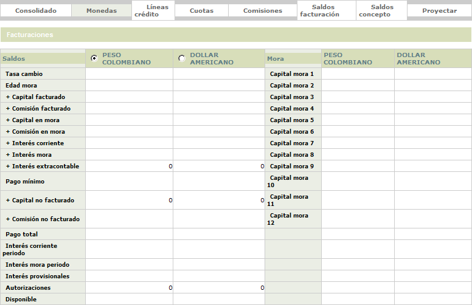
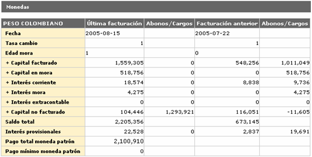

Saldos por moneda |
En este formulario que se invoca desde el detalle consulta de la tarjeta, en el hipervínculo información básica, saldos la entidad puede consultar la información acerca de los saldos de la tarjeta presentados para cada una de las monedas en las cuales se encuentren denominadas las diferentes transacciones efectuadas con la tarjeta.
La opción cuenta con el hipervínculo Facturaciones que le permite al usuario consultar los saldos de la tarjeta en las tres últimas facturaciones para la moneda seleccionada.

Descripci�n de campos
|
Tasa cambio |
Campo que muestra el valor de la tasa de cambio para cada una de las monedas desplegadas. |
Capital facturado |
Muestra el valor correspondiente para cada moneda del capital diferido cobrado al cliente dentro del pago mínimo. |
Comisión
facturada |
Campo que señala el monto de las comisiones cobradas al cliente dentro del pago mínimo para cada moneda. |
Capital
mora |
Campo en el que se muestra el monto de capital no cubierto por el cliente en las facturaciones anteriores para cada moneda. |
Comisión
mora |
Este campo indica para cada moneda el monto de las comisiones no cubiertas por el cliente en las facturaciones anteriores. |
Interés
corriente |
En este campo se indica el valor del interés de financiación que la entidad le cobra el cliente por los saldos pendientes a la fecha sobre los consumos efectuados en cada moneda. |
Interés
mora |
Campo que muestra para cada moneda el monto de los intereses de sanción generados por la entidad sobre las porciones de capital no cubiertas por el cliente en facturaciones anteriores. |
Interés
extracontable |
En este campo se indica el monto de los intereses que de acuerdo con la altura de mora o la calificación de la tarjeta, se deben causar sobre los saldos de la tarjeta por cada una de las monedas. |
Pago
mínimo |
Campo que indica para cada una de las monedas el monto que el actor debe cancelar para cubrir la obligación y no incurrir en mora. |
Capital
no facturado |
Muestra el monto de los consumos diferidos que se encuentran pendientes de facturar y no han sido incluidos aún dentro del pago mínimo para cada moneda. |
Comisión
no facturada |
En este campo se indica para cada moneda el monto de las comisiones que aún no han sido incluidas dentro del pago mínimo de la tarjeta. |
Saldo
pendiente |
Campo que indica para cada una de las monedas, el monto a cargo del cliente y que por efectos de ajustes y otro tipo de eventos se encuentra pendiente de ser facturado y cobrado. |
Interés corriente periodo |
Indica para cada moneda el monto de los intereses de financiación que la entidad cobra por los consumos efectuados y generados desde la última facturación hasta la fecha actual de proceso, intereses que no están incluidos en el pago mínimo. |
Interés mora periodo |
Campo que muestra para cada una de las monedas el monto de los intereses de sanción generados por la entidad sobre las porciones de capital no cubiertas por el cliente en facturaciones anteriores y generados desde la más reciente facturación hasta la fecha actual de proceso, los cuales no se encuentran incluidos dentro del pago mínimo. |
Pago
total |
Este campo contiene el valor total adeudado por el cliente a la entidad como resultado de las utilizaciones y consumos hechos con la tarjeta en cada una de las monedas. |
Interés
provisional |
Despliega para cada moneda el monto de los intereses calculados de manera provisional sobre transacciones que tengan la condición de condonar intereses el primer mes, de acuerdo con lo definido en transacciones por empresa. |
Autorizaciones |
Este campo señala para cada moneda el monto de las autorizaciones o aprobaciones otorgadas por la entidad y que se encuentran vigentes o sin cruzar. |
Disponible |
Campo en el que se muestra para cada moneda el valor del cupo que puede ser utilizado por el cliente para efectuar consumos con la tarjeta. |
Capital
mora 1... Capital mora 12 |
En estos campos se muestra para la moneda seleccionada el monto de capital no cubierto por el cliente en cada altura o edad de mora. |
Facturaciones: una vez que el actor ha seleccionado la moneda para la cual desea consultar la información de los saldos para las dos últimas fechas de corte, mediante el hipervínculo Facturaciones, se despliega un nuevo formulario en el cual se muestra al usuario la información deseada así como los cargos y abonos registrados entre una fecha y otra para cada concepto presentado. La descripción del contenido de los campos es el mismo descrito en el formulario inicial con la salvedad que los datos corresponden a la fecha que se muestra respectivamente en la primera fila y que al final del formulario se indica el valor del pago mínimo y el pago total expresados en la moneda patrón.
